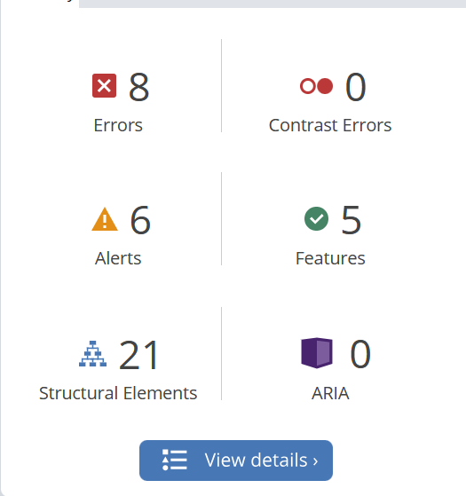
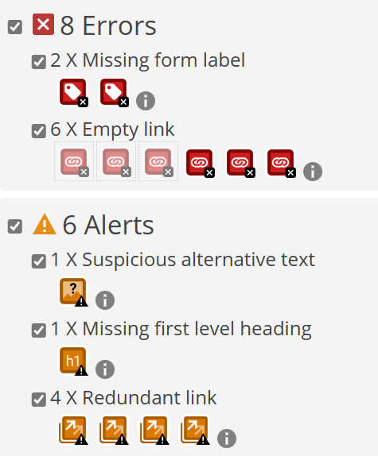
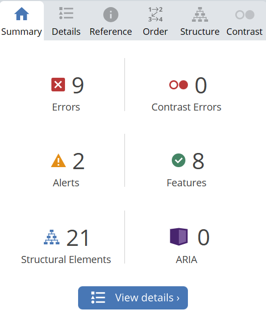
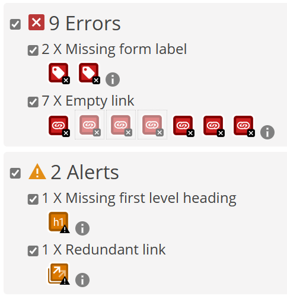
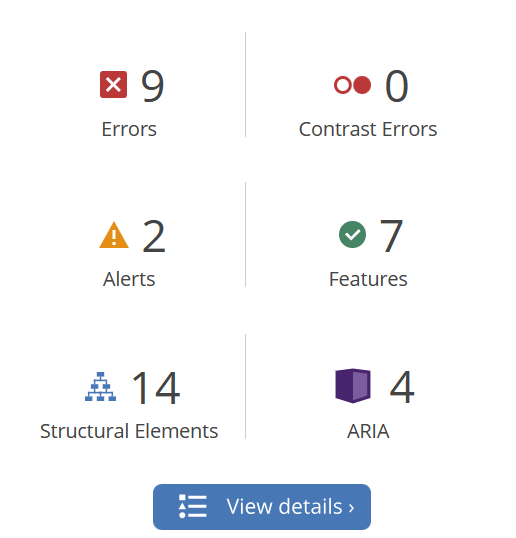
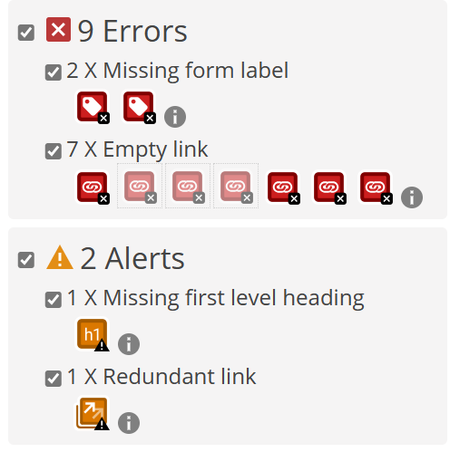
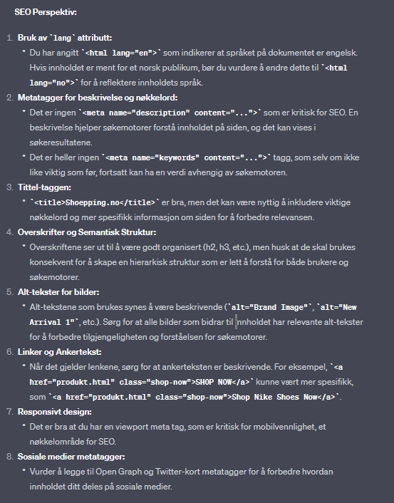
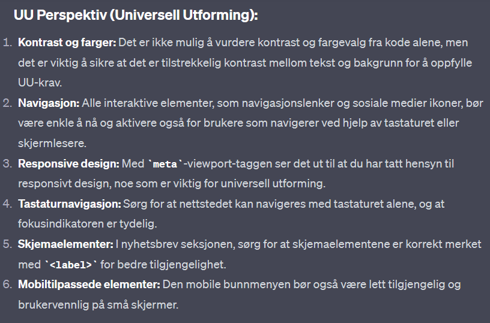
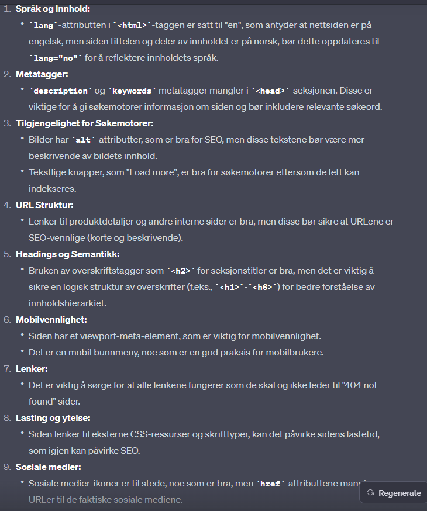

SEO Analyse
Forside - Desktop
Desktop-analyse viser en SEO-score på 90, noe som indikerer at siden er godt optimalisert for søkemotorer. Den høye scoren reflekterer bruk av semantisk HTML, tilstedeværelsen av metatagger, og tilpassede titler og beskrivelser for siden.

Forside - Mobile
Mobil-analyse viser en SEO-score på 90, noe som tyder på at mobilvisningen også er godt optimalisert. Dette antyder at siden bruker responsive designprinsipper og har rask lastetid, noe som er viktig for mobilbrukere.

Produktside - Desktop
For desktop visning oppnår produktsiden en imponerende 100 i Performance, noe som betyr at siden laster svært raskt og har optimalisert ressursbruk. Accessibility-scoren på 93 indikerer at siden er godt tilgjengelig for brukere med forskjellige behov. En score på 86 i Best Practices viser at det er noen få områder for forbedring i hvordan nettleserfunksjoner brukes og annen god kodepraksis. SEO-scoren på 90 viser at siden er godt optimalisert for søkemotorer, men kan muligens forbedres ytterligere med finjusteringer.

Produktside - Mobile
På mobil enheter scorer produktsiden nesten like høyt som på desktop, med en Performance på 99 som demonstrerer rask lasting og effektivt innholdsrendering på mobile enheter. Tilgjengeligheten holder seg stabil på 93, noe som understreker at siden også er tilrettelagt for brukere med tilgjengelighetsbehov på tvers av enheter. Best Practices-scoren på 91 er en indikasjon på at siden følger moderne webstandarder og praksiser også for mobile brukere. SEO-scoren på 90 sikrer at siden er velposisjonert for søkemotorsynlighet, selv når den blir tilgjengeliggjort på mobile enheter. PWA-indikatoren viser at applikasjonen tilbyr en nær-native brukeropplevelse på mobile enheter, men detaljene her vil kreve en dypere teknisk analyse for å forstå det fulle potensialet av PWA for produktsiden.

Produktdetaljside - Desktop
Denne Lighthouse-rapporten indikerer en eksepsjonell ytelse på 100 for desktop, noe som sikrer lynrask lastet. Den scorer også 90% på SEO-Analyse

Universell Utforming (UU) Analyse
Forside Analyse
Skjermbildet viser en tilgjengelighetsrapport for en nettside som indikerer 8 feil og 6 advarsler. Feilene inkluderer 2 manglende skjemaetiketter og 6 tomme lenker. Advarslene omfatter 1 mistenkelig alternativ tekst, 1 manglende hovedoverskrift, og 4 redundante lenker. Ingen kontrastfeil er funnet, og det er 5 positive funksjoner samt 21 strukturelle elementer og ingen ARIA problemer rapportert.


Produktside Analyse
Rapporten viser en tilgjengelighetsanalyse for en produktside med 9 feil, inkludert 2 tilfeller av manglende skjemaetiketter og 7 tomme lenker. Det er også 2 advarsler notert: 1 for en manglende førstenivåsoverskrift og 1 for en redundant lenke. Det er ingen kontrastfeil, og 8 funksjoner er oppført som positive. Det er identifisert 21 strukturelle elementer og ingen ARIA-feil på siden.


Produktdetaljside Analyse
Rapporten fremhever en tilgjengelighetsvurdering for en produktdetaljside. Analysen identifiserer 9 feil, bestående av 2 manglende skjemaetiketter og 7 tomme lenker. Det er 2 advarsler, hvorav én for manglende førstenivåsoverskrift og én for en redundant lenke. Siden har 7 positive trekk og inneholder 14 strukturelle elementer samt 4 ARIA-roller. Det er ingen kontrastfeil rapportert.


ChatGPT Analyse : SEO og UU
SEO Resultater : Forside Analyse

I SEO-analysen påpekes det først at språkattributtet på siden indikerer engelsk (lang="en"), men siden er ment for et norsk publikum, derfor foreslås det å endre attributtet til norsk (lang="no") for å gjenspeile innholdets språk. Det nevnes at meta-beskrivelser og nøkkelord mangler, og at titteltaggen bør inneholde viktig nøkkelord og spesifikk informasjon for å forbedre relevansen. Videre anbefales det å strukturere overskrifter på en semantisk måte for brukervennlighet og søkemotoroptimalisering, samt å sørge for at bildetekster er beskrivende og at ankerlenker (linker) er informative og relevante. Responsiv design er også nevnt, spesielt viktigheten av en viewport meta-tag for mobilvennlighet. Til slutt er det en oppfordring til å inkludere Open Graph og Twitter-kort metatagger for å optimalisere hvordan innholdet deles på sosiale medier.
UU Resultater : Forside Analyse

Fra perspektivet av universell utforming, blir det kommentert at siden mangler CSS som er nødvendig for å vurdere kontrast og fargevalg, noe som er viktig for å møte tilgjengelighetsstandarder. Nettstedets navigasjon virker klar og strukturert, men det bør sikres at interaktive elementer er tilstrekkelig store og enkle å navigere med tastatur. Det er også foreslått å vurdere ARIA-roller og -attributter for å forbedre forståelsen av siden for skjermleserbrukere, og å inkludere form elementer med riktig 'label' for bedre tilgjengelighet. Mobiltilgjengeligheten bør testes, tekstinnholdet bør være enkelt og forståelig, og det må sikres at hele nettstedet kan navigeres med tastatur alene.
SEO Resultater : Produktside Analyse

SEO-analysen påpeker at nettsiden har flere områder som kan forbedres. Språkinnstillingen i 'html'-taggen er satt til engelsk ('en'), men siden er på norsk, derfor bør 'lang'-attributtet oppdateres til norsk ('no'). Det er også en mangel på 'description' og 'keywords' metatagger i 'head'-seksjonen, som er essensielt for at søkemotorer skal forstå og indeksere nettstedets innhold korrekt. Bildene har 'alt'-attributter, noe som er positivt for SEO, men tekstene i disse attributtene bør være mer beskrivende. Tekstknapper som "Load more" bidrar til indekserbarhet, men må være tekstlig beskrivende.
Nettsiden bør sikre at URL-er til produktdetaljer og interne sider er SEO-vennlige, noe som innebærer at de skal være korte og beskrivende. Det er også viktig å bruke overskriftstagger ('h2', 'h3', etc.) for å strukturere innholdet logisk og gjøre det forståelig. Mobilvennlighet er ivaretatt gjennom viewport-meta-elementet, og nettsiden har en mobilvennlig navigasjon. For lenker er det essensielt å sikre at de er funksjonelle og ikke leder til "404 not found" sider. Lastetid kan påvirkes av hvordan siden laster CSS-ressurser og skript, noe som også er viktig for SEO. Til slutt, sosiale medier-ikoner er til stede, men 'href'-attributtene kan mangle korrekte lenker til de faktiske sosiale mediene
UU Resultater : Produktside Analyse

I UU-analysen bemerkes det at kontrast og farger ikke kan vurderes uten CSS, men det er essensielt at teksten har tilstrekkelig kontrast mot bakgrunnen. En klar og konsistent navigasjonsmeny, gjerne med bruk av 'nav'-elementet, er viktig for brukervennlighet. "Load more"-knappen bør gi tydelig feedback. For skjermlesere, er det viktig med bruk av semantiske HTML5-tagger som 'header', 'main', 'footer', og 'nav'. Elementer som stjernerangeringer bør ha tekstlige beskrivelser tilgjengelig via 'aria-label'. Skjemaer, spesielt for nyhetsbrevabonnement, må ha tydelige 'label'- eller 'aria-label'-attributter for tilgjengelighet. Til slutt er det viktig at HTML-koden validerer mot W3C-standardene for å sikre at nettstedet er så kompatibelt og tilgjengelig som mulig.
SEO Resultater : Produktdetaljside Analyse
Sammenligning av Resultater
| ChatGPT Resultater |
Lighthouse Resultater |
WebAIM Resultater |
| ChatGPT resultatene her |
Lighthouse resultatene her |
WebAIM resultatene her |
Forbedringstiltak
Dokumentasjon av hva som ble endret, hvorfor det ble endret, og de forbedrede resultatene.